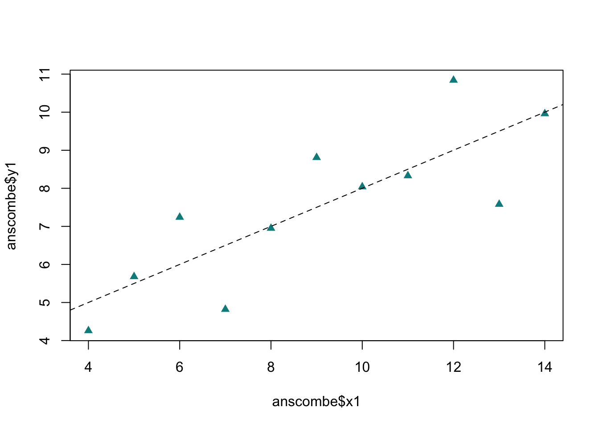
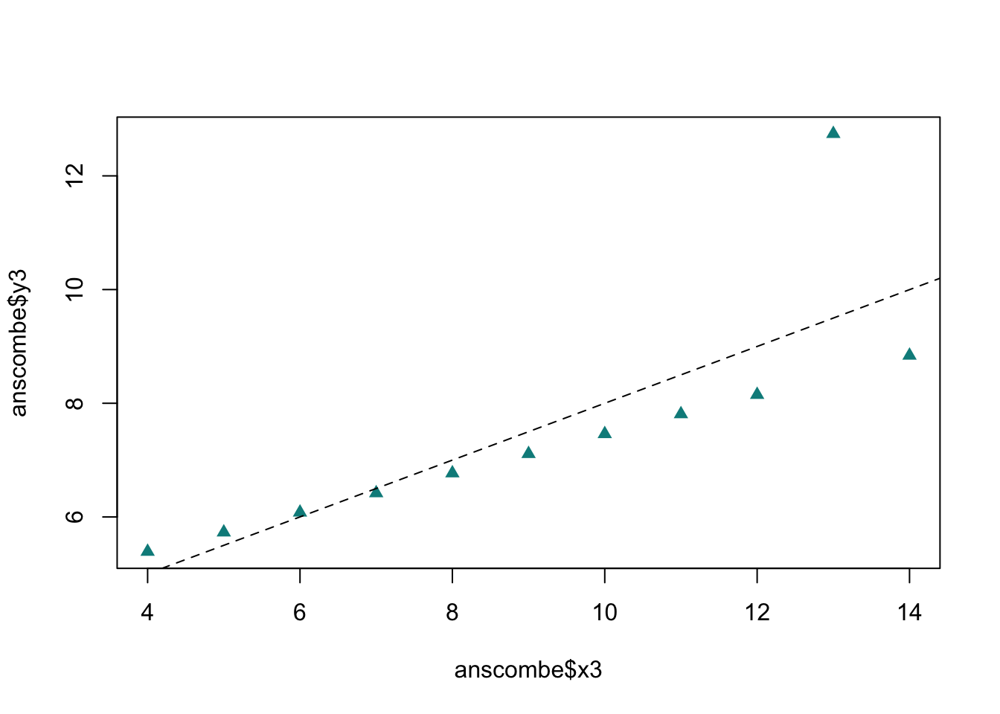
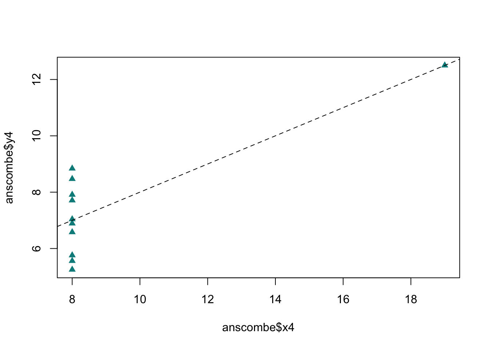
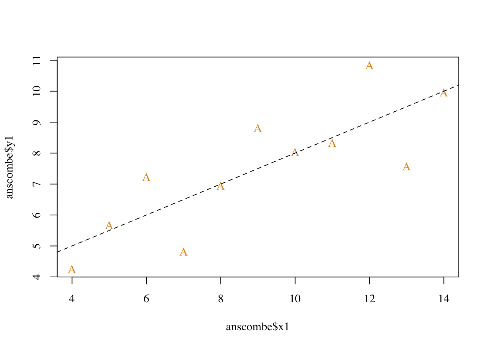
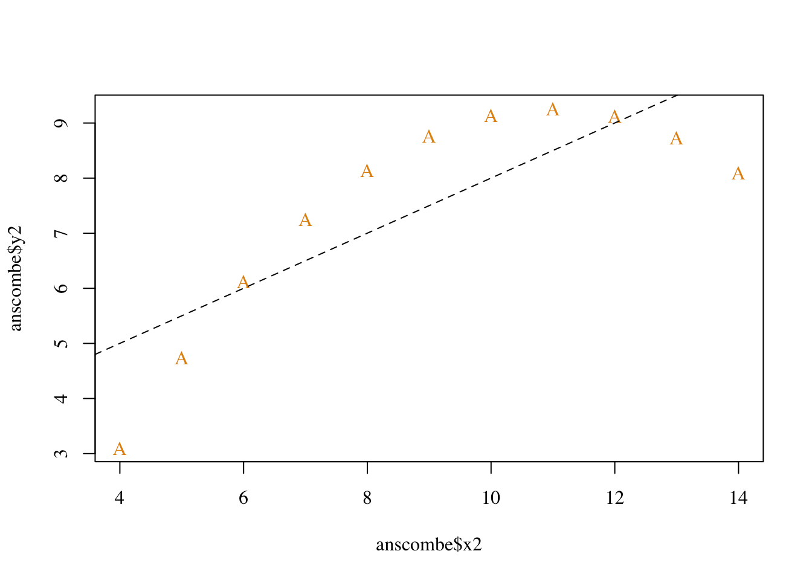
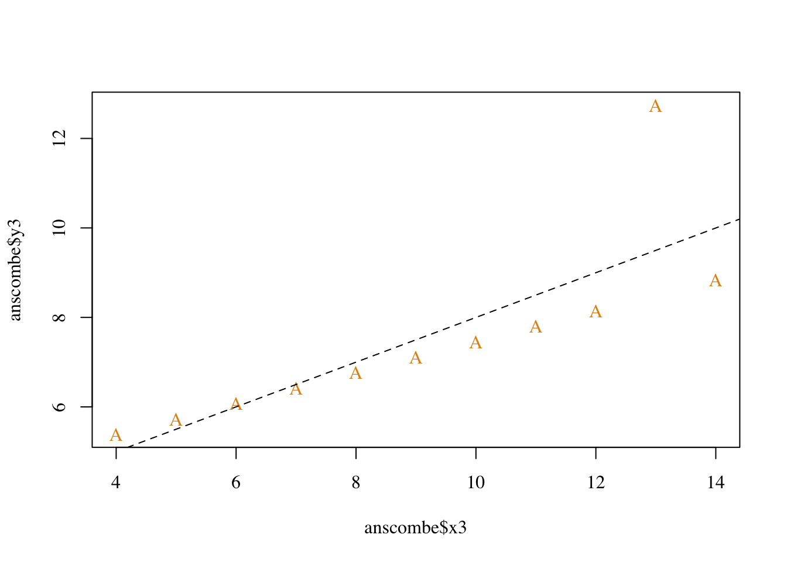
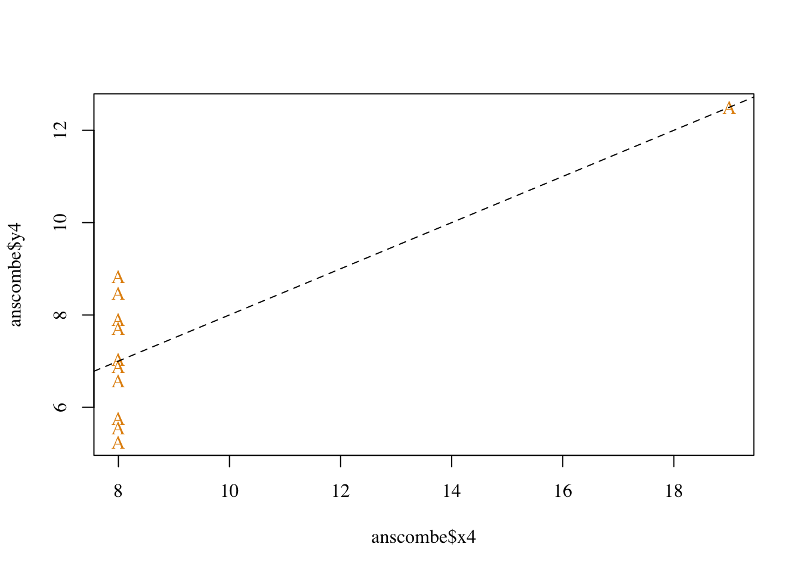
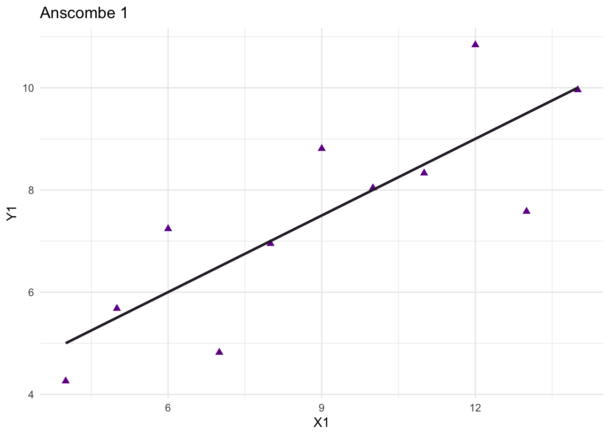
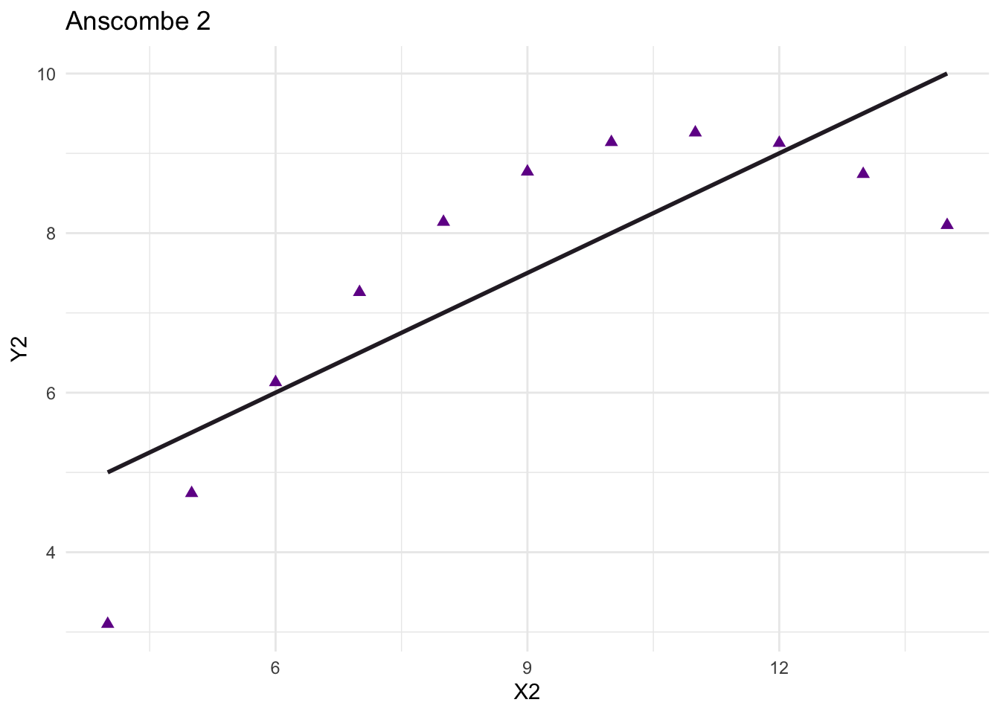
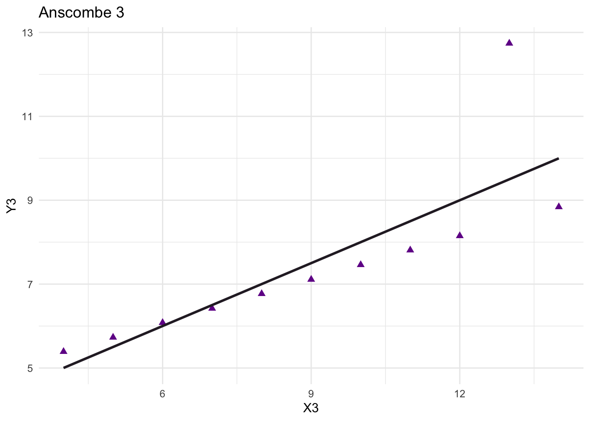

library(readxl)
df <- read_excel('myHPI.xlsx') # import data
df <- na.omit(df) # remove na's
hist_density <- density(df$GDP) # create density line
hist(df$GDP, # histogram function
breaks = 7, # 7 sections
freq = FALSE, # use density instead of frequency
col = 'azure3',
main = 'Histogram of GDP per Capita',
xlab = 'GDP'
)
lines(hist_density, # add density line on top of the histogram
col = 'cyan4',
lwd = 2)Section 1
Section 2
data(anscombe) # Load Anscombe's data
summary(anscombe) x1 x2 x3 x4 y1
Min. : 4.0 Min. : 4.0 Min. : 4.0 Min. : 8 Min. : 4.260
1st Qu.: 6.5 1st Qu.: 6.5 1st Qu.: 6.5 1st Qu.: 8 1st Qu.: 6.315
Median : 9.0 Median : 9.0 Median : 9.0 Median : 8 Median : 7.580
Mean : 9.0 Mean : 9.0 Mean : 9.0 Mean : 9 Mean : 7.501
3rd Qu.:11.5 3rd Qu.:11.5 3rd Qu.:11.5 3rd Qu.: 8 3rd Qu.: 8.570
Max. :14.0 Max. :14.0 Max. :14.0 Max. :19 Max. :10.840
y2 y3 y4
Min. :3.100 Min. : 5.39 Min. : 5.250
1st Qu.:6.695 1st Qu.: 6.25 1st Qu.: 6.170
Median :8.140 Median : 7.11 Median : 7.040
Mean :7.501 Mean : 7.50 Mean : 7.501
3rd Qu.:8.950 3rd Qu.: 7.98 3rd Qu.: 8.190
Max. :9.260 Max. :12.74 Max. :12.500 ## Simple version
plot(anscombe$x1,anscombe$y1)
summary(anscombe) x1 x2 x3 x4 y1
Min. : 4.0 Min. : 4.0 Min. : 4.0 Min. : 8 Min. : 4.260
1st Qu.: 6.5 1st Qu.: 6.5 1st Qu.: 6.5 1st Qu.: 8 1st Qu.: 6.315
Median : 9.0 Median : 9.0 Median : 9.0 Median : 8 Median : 7.580
Mean : 9.0 Mean : 9.0 Mean : 9.0 Mean : 9 Mean : 7.501
3rd Qu.:11.5 3rd Qu.:11.5 3rd Qu.:11.5 3rd Qu.: 8 3rd Qu.: 8.570
Max. :14.0 Max. :14.0 Max. :14.0 Max. :19 Max. :10.840
y2 y3 y4
Min. :3.100 Min. : 5.39 Min. : 5.250
1st Qu.:6.695 1st Qu.: 6.25 1st Qu.: 6.170
Median :8.140 Median : 7.11 Median : 7.040
Mean :7.501 Mean : 7.50 Mean : 7.501
3rd Qu.:8.950 3rd Qu.: 7.98 3rd Qu.: 8.190
Max. :9.260 Max. :12.74 Max. :12.500 # Create four model objects
lm1 <- lm(y1 ~ x1, data=anscombe)
summary(lm1)
Call:
lm(formula = y1 ~ x1, data = anscombe)
Residuals:
Min 1Q Median 3Q Max
-1.92127 -0.45577 -0.04136 0.70941 1.83882
Coefficients:
Estimate Std. Error t value Pr(>|t|)
(Intercept) 3.0001 1.1247 2.667 0.02573 *
x1 0.5001 0.1179 4.241 0.00217 **
---
Signif. codes: 0 '***' 0.001 '**' 0.01 '*' 0.05 '.' 0.1 ' ' 1
Residual standard error: 1.237 on 9 degrees of freedom
Multiple R-squared: 0.6665, Adjusted R-squared: 0.6295
F-statistic: 17.99 on 1 and 9 DF, p-value: 0.00217lm2 <- lm(y2 ~ x2, data=anscombe)
summary(lm2)
Call:
lm(formula = y2 ~ x2, data = anscombe)
Residuals:
Min 1Q Median 3Q Max
-1.9009 -0.7609 0.1291 0.9491 1.2691
Coefficients:
Estimate Std. Error t value Pr(>|t|)
(Intercept) 3.001 1.125 2.667 0.02576 *
x2 0.500 0.118 4.239 0.00218 **
---
Signif. codes: 0 '***' 0.001 '**' 0.01 '*' 0.05 '.' 0.1 ' ' 1
Residual standard error: 1.237 on 9 degrees of freedom
Multiple R-squared: 0.6662, Adjusted R-squared: 0.6292
F-statistic: 17.97 on 1 and 9 DF, p-value: 0.002179lm3 <- lm(y3 ~ x3, data=anscombe)
summary(lm3)
Call:
lm(formula = y3 ~ x3, data = anscombe)
Residuals:
Min 1Q Median 3Q Max
-1.1586 -0.6146 -0.2303 0.1540 3.2411
Coefficients:
Estimate Std. Error t value Pr(>|t|)
(Intercept) 3.0025 1.1245 2.670 0.02562 *
x3 0.4997 0.1179 4.239 0.00218 **
---
Signif. codes: 0 '***' 0.001 '**' 0.01 '*' 0.05 '.' 0.1 ' ' 1
Residual standard error: 1.236 on 9 degrees of freedom
Multiple R-squared: 0.6663, Adjusted R-squared: 0.6292
F-statistic: 17.97 on 1 and 9 DF, p-value: 0.002176lm4 <- lm(y4 ~ x4, data=anscombe)
summary(lm4)
Call:
lm(formula = y4 ~ x4, data = anscombe)
Residuals:
Min 1Q Median 3Q Max
-1.751 -0.831 0.000 0.809 1.839
Coefficients:
Estimate Std. Error t value Pr(>|t|)
(Intercept) 3.0017 1.1239 2.671 0.02559 *
x4 0.4999 0.1178 4.243 0.00216 **
---
Signif. codes: 0 '***' 0.001 '**' 0.01 '*' 0.05 '.' 0.1 ' ' 1
Residual standard error: 1.236 on 9 degrees of freedom
Multiple R-squared: 0.6667, Adjusted R-squared: 0.6297
F-statistic: 18 on 1 and 9 DF, p-value: 0.002165Using summary, it can be observed that the 4 regression lines are extremely similar to each other as they share similar slope and intercept values.
# Default Plots
plot(anscombe$x1,anscombe$y1)
abline(coefficients(lm1))
plot(anscombe$x2,anscombe$y2)
abline(coefficients(lm2))
plot(anscombe$x3,anscombe$y3)
abline(coefficients(lm3))
plot(anscombe$x4,anscombe$y4)
abline(coefficients(lm4))
# New Plots With Dashed Lines and Triangle Plotting Characters
plot(anscombe$x1,
anscombe$y1,
col = "cyan4",
pch = 17
)
abline(coefficients(lm1), lty = 2)
plot(anscombe$x2,
anscombe$y2,
col = "cyan4",
pch = 17
)
abline(coefficients(lm2), lty = 2)plot(anscombe$x3,
anscombe$y3,
col = "cyan4",
pch = 17
)
abline(coefficients(lm3), lty = 2)
plot(anscombe$x4,
anscombe$y4,
col = "cyan4",
pch = 17
)
abline(coefficients(lm4), lty = 2)
Section 3
par(family = "serif")
plot(anscombe$x1,
anscombe$y1,
col = "#E39110",
pch = "A"
)
abline(coefficients(lm1), lty = 2)
plot(anscombe$x2,
anscombe$y2,
col = "#E39110",
pch = "A"
)
abline(coefficients(lm2), lty = 2)
plot(anscombe$x3,
anscombe$y3,
col = "#E39110",
pch = "A"
)
abline(coefficients(lm3), lty = 2)
plot(anscombe$x4,
anscombe$y4,
col = "#E39110",
pch = "A"
)
abline(coefficients(lm4), lty = 2)
par(family = "")Section 4
library(ggplot2)
ggplot(anscombe, aes(x = x1, y = y1)) +
geom_point(color = "#720F96", shape = 17, size = 2) +
geom_smooth(
method = "lm",
se = FALSE,
color = "#2B232E"
) +
labs(title = "Anscombe 1", x = "X1", y = "Y1") +
theme_minimal()
ggplot(anscombe, aes(x = x2, y = y2)) +
geom_point(color = "#720F96", shape = 17, size = 2) +
geom_smooth(
method = "lm",
se = FALSE,
color = "#2B232E"
) +
labs(title = "Anscombe 2", x = "X2", y = "Y2") +
theme_minimal()
ggplot(anscombe, aes(x = x3, y = y3)) +
geom_point(color = "#720F96", shape = 17, size = 2) +
geom_smooth(
method = "lm",
se = FALSE,
color = "#2B232E"
) +
labs(title = "Anscombe 3", x = "X3", y = "Y3") +
theme_minimal()
ggplot(anscombe, aes(x = x4, y = y4)) +
geom_point(color = "#720F96", shape = 17, size = 2) +
geom_smooth(
method = "lm",
se = FALSE,
color = "#2B232E"
) +
labs(title = "Anscombe 4", x = "X4", y = "Y4") +
theme_minimal()